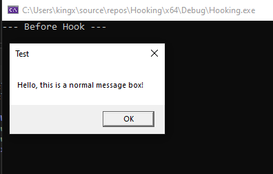
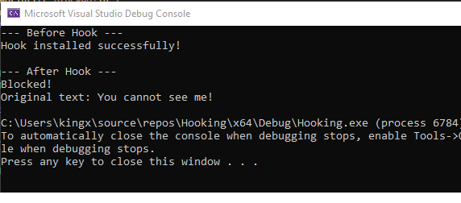
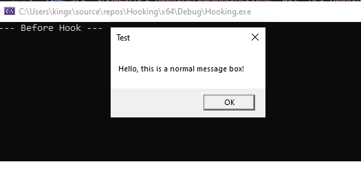
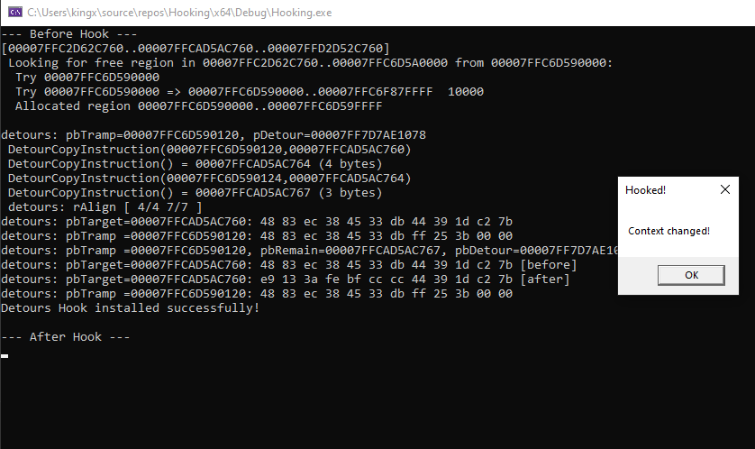

Hello everyone today I will talk about how to API hooking. API hooking is a method to modify
interfere the function used. For example with MessageBoxA: You can blocked it. Don't let
it appear, change the context inside, or fake that the user has chosen OK. I'll show
you 2 methods to do this. The first method is to do it the primitive way. We'll use the jump instruction
rewrite the original assembly with a new one. We need to overwrite the first few instructions
(the function prologue) with a 12-byte absolute jump instruction. it might corrupt the underlying assembly
and cause the process to crash.
We'll create a new message box function. It'll return the as the user pressed OK.
int WINAPI HookedMessageBoxW(HWND hWnd, LPCWSTR lpText, LPCWSTR lpCaption, UINT uType) {
wprintf(L"Blocked!\n");
wprintf(L"OriginalText: %s\n", lpText);
return IDOK;
}
After that, I'll make a InstallHook() function which will change the MessageBoxW with our new messagebox function.
void InstallHook() {
HMODULE hUser32 = LoadLibraryA("user32.dll");
FARPROC originalFuncAddress = GetProcAddress(hUser32, "MessageBoxW");
Get the original function address by using GetProcAddress().
ASSEMBLY:
mov rax, <address_of_new_function (8Bytes)> (Opcode: 48 B8 ...)
jmp rax (opcode: FF E0)
BYTE jmpInstruction[12] = { 0x48, 0xB8, 0x00, 0x00, 0x00, 0x00, 0x00, 0x00, 0x00, 0x00, 0xFF, 0xE0 };After that we will copy our new message box function address into the jmpInstruction[];
void* hookAddr = (void*)HookedMessageBoxW;
memcpy(jmpInstruction + 2, &hookAddr, 8);
DWORD oldProtect;
VirtualProtect(originalFuncAddress, 12, PAGE_EXECUTE_READWRITE, &oldProtect);
Then we'll copy the jmpInstruction into the originalFuncAddress which is the MessageBoxW.
memcpy(originalFuncAddress, jmpInstruction, 12);
...
}A normal main function!
int main() {
printf("Before Hook\n");
MessageBoxW(NULL, L"Hello!", L"Test", MB_OK);
InstallHook();
printf("\nAfter Hook\n");
MessageBoxW(NULL, L"You can't see me!", L"Test", MB_OK);
return 0;
}

The second methods is simpler using Detours make sure you got Detours downloaded!
git clone https://github.com/Microsoft/vcpkg.git
cd vcpkg
.\bootstrap-vcpkg.bat
.\vcpkg install detours:x64-windows
.\vcpkg integrate installFirst I'll explain how Detour works, It got 4 main steps.
TrueMessageBox) to point to this Trampoline.
DetourUpdateThread(GetCurrentThread()), Detours will suspend all the threads
if it doesn't do this a thread might be using the MessageBoxA function and will crash our process. This make sure no thread is running when we overwriting the function.
DetourTransactionCommit() will
VirtualProtect to give Write privilege to the original memory. Overwrite with the JMP instruction to our hook. Restore the VirtualProtect call the FlushInstructionCache() notify CPU that the assembly
had been changed, request the CPU to delete the old cache and read again from memory. Resume all the Threads.
#include <windows.h>
#include <stdio.h>
#include <Detours/detours.h>
Create a TrueMessageBox function pointer to the MessageBoxW function address.
static int (WINAPI* TrueMessageBoxW)(HWND, LPCWSTR, LPCWSTR, UINT) = MessageBoxW;Replace function
int WINAPI HookedMessageBoxW(HWND hWnd, LPCWSTR lpText, LPCWSTR lpCaption, UINT uType) {
return TrueMessageBoxW(hWnd, L"Context changed!", L"Hooked!", uType);
}
Here's what's we gonna do MessageBoxW -> HookedMessageBox and TrueMessageBoxW -> Trampoline -> OG MessageBox.
void InstallHook() {
DetourRestoreAfterWith();Using Transaction to hooksafely
DetourTransactionBegin();
DetourUpdateThread(GetCurrentThread());
Attach the HookedMessageBoxW into the &TrueMessageBoxW which is MessageBoxW.
DetourAttach(&(PVOID&)TrueMessageBoxW, HookedMessageBoxW);
DetourTransactionCommit();
printf("Detours Hook installed successfully!\n");
}void UninstallHook() {
DetourTransactionBegin();
DetourUpdateThread(GetCurrentThread());
DetourDetach(&(PVOID&)TrueMessageBoxW, HookedMessageBoxW);
DetourTransactionCommit();
printf("Detours Hook uninstalled!\n");
}int main() {
printf("--- Before Hook ---\n");
MessageBoxW(NULL, L"Hello, this is a normal message box!", L"Test", MB_OK);
InstallHook();
printf("\n--- After Hook ---\n");
MessageBoxW(NULL, L"You cannot see me!", L"Test", MB_OK);
UninstallHook();
return 0;
}

As you can see this is way simpler than the other method and it's fast and safe.
That's it for today see you in the next blog. For more details you can check the Source Primitive and Source Detours.